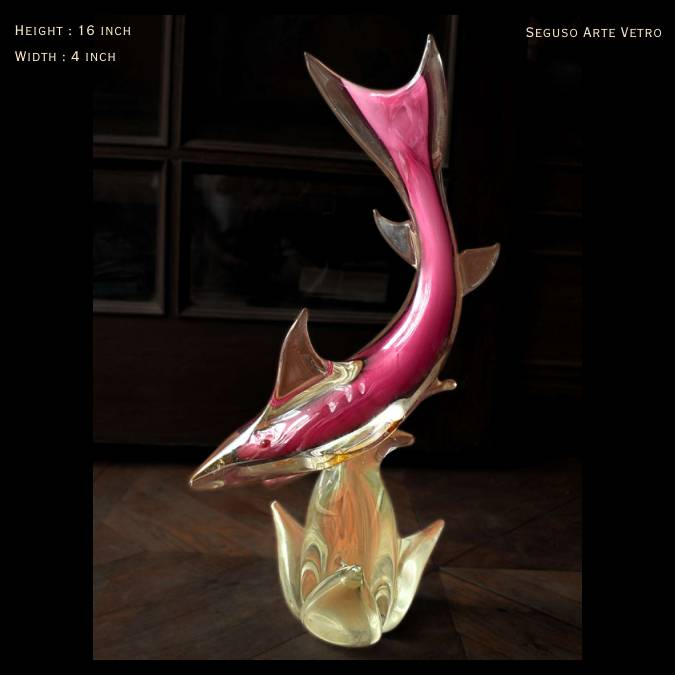

#01med confidence
Murano sommerso leaping fish/dolphin sculpture
Seguso Arte Vetro (Murano)
$350–650 suggested retail (USD)
- Era
- c.1960s-1980s
- Material
- Sommerso blown glass
- Colour
- Magenta/pink cased in clear, amber-clear base
- Size
- H16 x W4 in
Identification & comparables (3)
Seguso family sommerso sea-life sculpture; confirm label/signature to distinguish Seguso Arte Vetro vs Archimede Seguso vs generic Murano. Research note: 1stDibs/Chairish pages blocked for direct fetch; prices from search snippets.
- 650 USD · asking · 1stDibs · listed · source
Seguso sommerso star fish sculpture; sale price, list $795 - 570 USD · asking · 1stDibs · listed · source
Sommerso green fish on wave base; sale price, list $635 - price not visible USD · asking · Chairish · listed · source
Archimede Seguso pink sommerso fish, 5in tall, labelled; price not visible